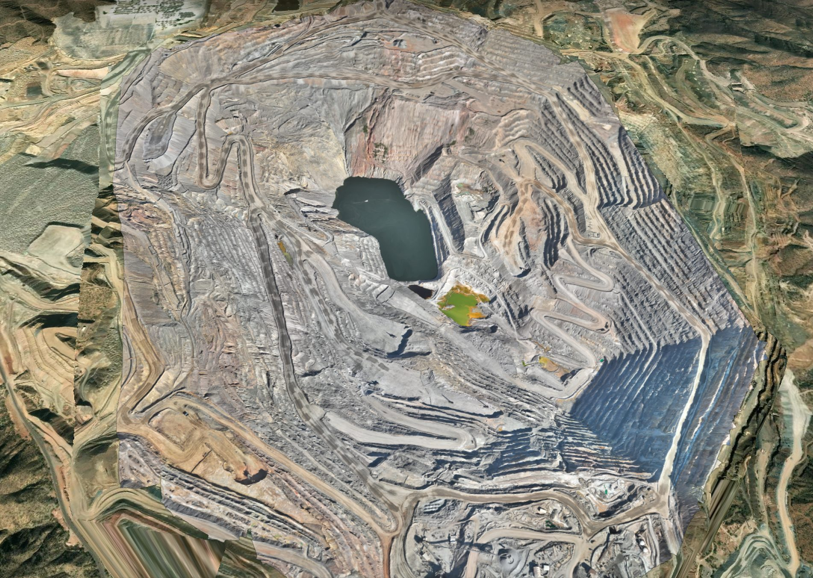
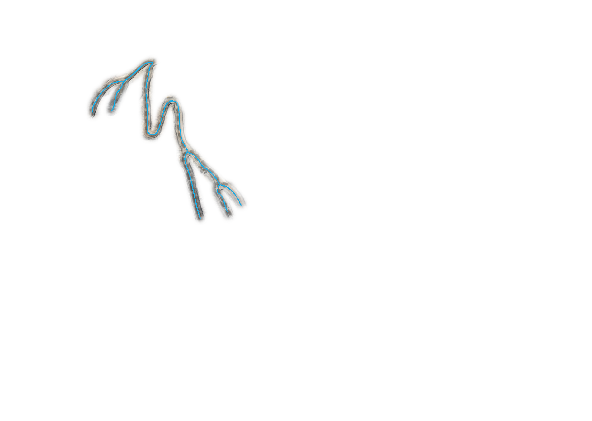
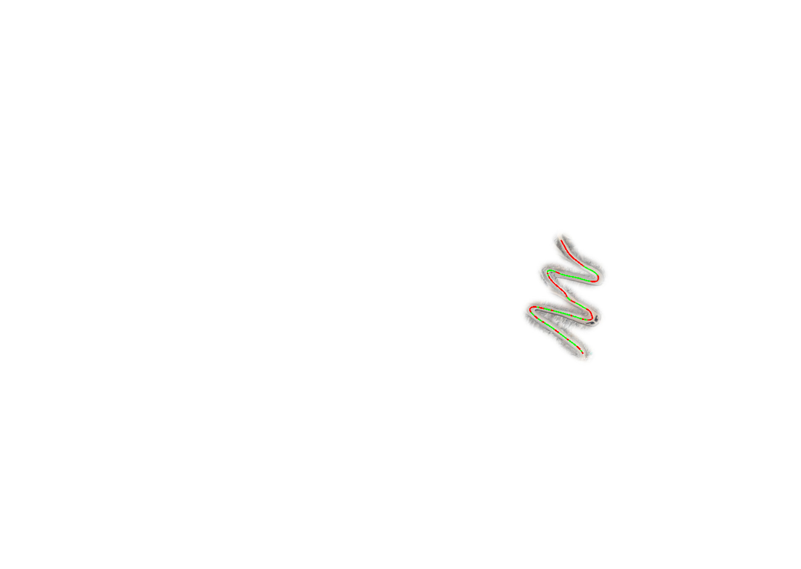
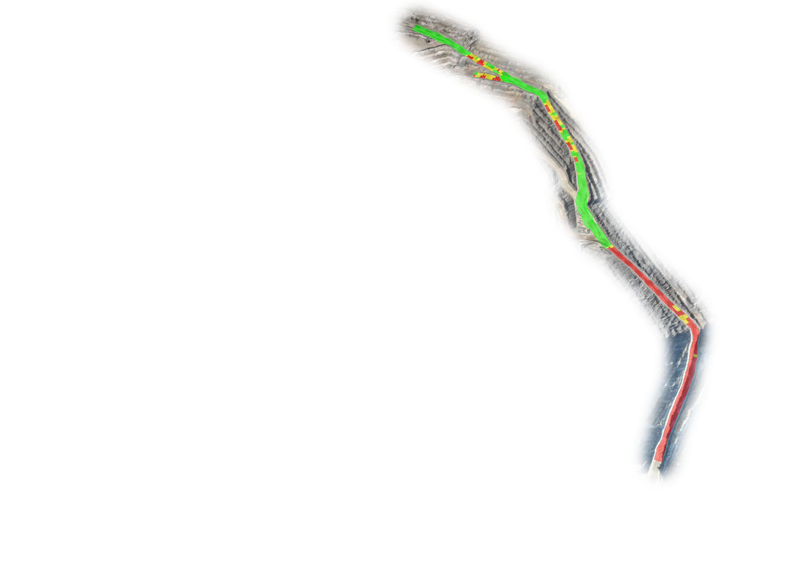
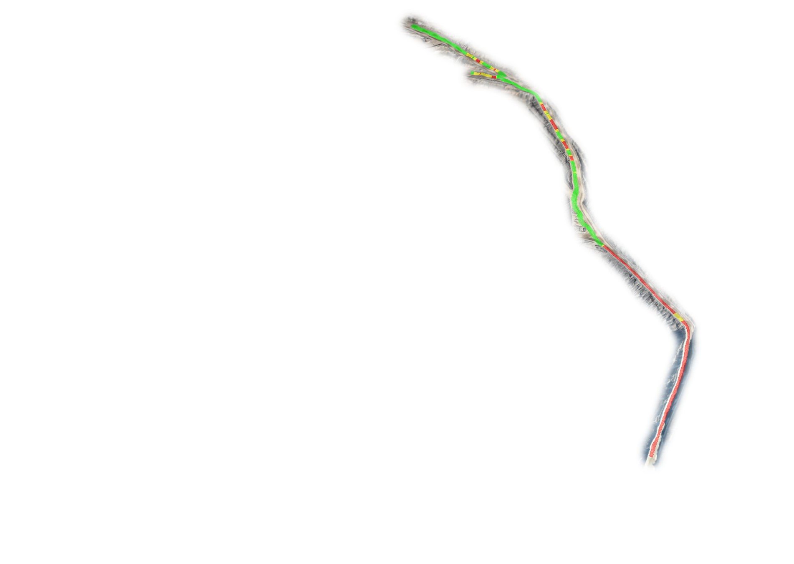
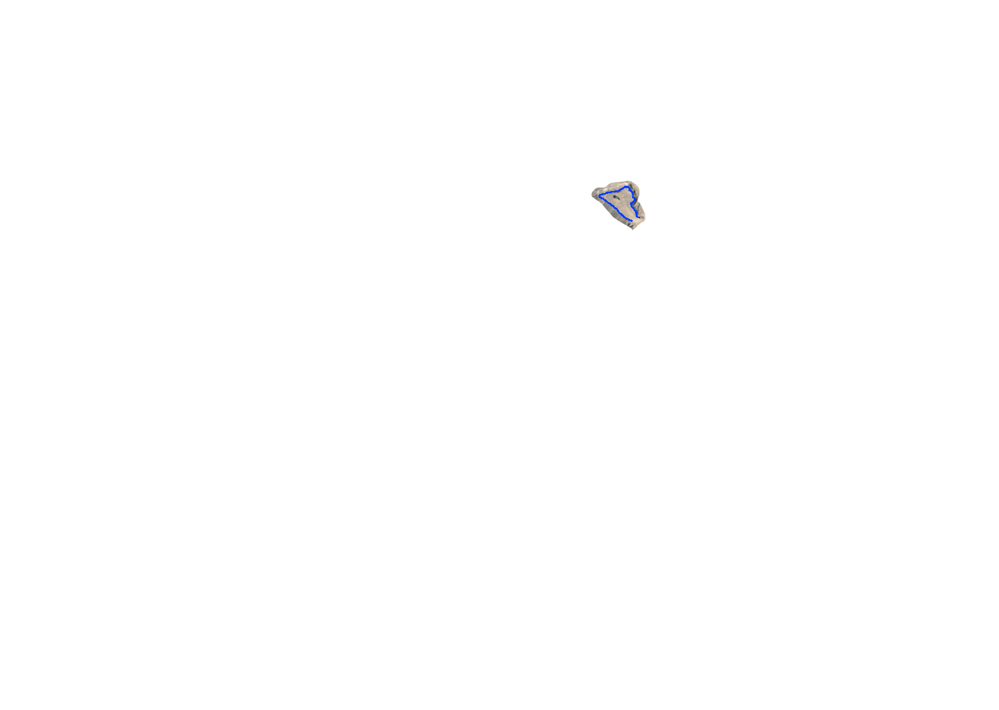
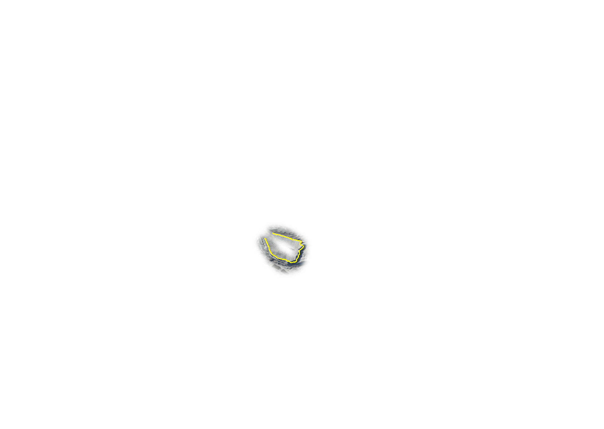

flag
Org.
Cordillera Resources
expand_more
Site.
Cerro Negro Pit
expand_more
GSI
Simulation
Reports
Operations
Connections
light_mode
dark_mode
E







Switchbacks Update
316.3 ha
add_a_photo
New Capture
Drone
DJI-M300-04
close
Status
Mission Execution
Battery
48%
Pilot
M. Rivera
Pilot
Details
local_shipping
Truck
HT-093
close
Payload
284 t
Last seen
12s ago
Operator
L. Chen
LiDAR Update
Surface Update
Measure
Inspect
Configure Mission
New capture · Cerro Negro Pit
close
Mission name
Payload
LiDAR Mission
Photogrammetry
Thermal
expand_more
Priority
Medium
High
Low
expand_more
Frequency
Daily
Weekly
Monthly
Ad hoc
expand_more
Start time
Ground sampling distance
cm/px
Lower GSD = higher resolution, longer flight.
Mission boundary
crop_free
Polygon — 316.3 ha
edit
save
Save Mission
Slope Analysis 1
Capture
04.12.26
close
Road Compliance
87
%
Steepest Slope
5.6
%
Flattest Slope
0.2
%
Segment Length
1,240
m
Segment cross-section
0 m
620 m
1,240 m